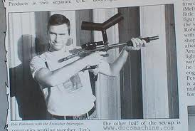
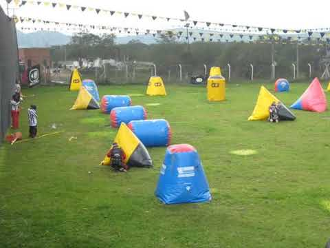

El paintball se originó como resultado de los múltiples usos que los ganaderos descubrieron que podían darle a las pistolas de pintura empleadas para marcar sus territorios. Utilizaban estas pistolas como una herramienta de trabajo habitual para señalar árboles y ganado.
La compañía de Charles Nelson, “Nelson Paint Company“, patentaron varios trucos que los Ranger utilizaban para marcar la madera con pintura. Entre sus herramientas utilizaban las pistolas de pintura.
A veces necesitaban marcar árboles que se encontraban a mucha distancia, después de un arroyo o en bosques densos. El Servicio Forestal de Estados Unidos le encargó a Nelson un marcador de pintura que pudiese ser usado para distancias más grandes. Así que Nelson creó, aún sin saberlo, el arma que se utilizaría para el Paintball. Inventó un proyectil de tinta en capsulas de gelatina y tabletas, de uso común en medicina para caballos que podía ser disparado desde un arma de fuego.
Años después, Nelson junto con la compañía Daisy crearon el Nel-Spot 007, con pinturas a base de aceite. A partir de aquí, estas armas empezaron a fabricarse en masa.
La anécdota cuenta que durante una jornada de marcado de ganado con esta herramienta, dos amigos comenzaron a dispararse entre ellos. Como en tantos otros descubrimientos, obtuvieron otro uso de la herramienta por pura improvisación.
Fue en año 1981, en New Hampshire, Estados Unidos, cuando un grupo de amigos utilizaron por primera vez los marcadores con un fin recreativo. El juego se llamó en sus orígenes National Survival Game. La primera marcadora fue el modelo Nelspot Un año después, fue inaugurado el primer campo de Paintball al aire libre, listo y preparado para ser utilizado por el público.

En 1984, se inauguró el primer campo de Paintball cerrado. A partir de este momento, la industria del Paintball comenzó a buscar las mejores formas de crear un deporte seguro y apto para todos los públicos.
Sin embargo el Paintball de esa época distaba mucho del que jugamos actualmente: las marcadoras, que tenían que ser amartilladas en cada disparo, tenían un máximo de 12 tiros; las máscaras aún no se habían inventado, y utilizaban únicamente gafas. En 1983 comienza la competencia entre distintas compañías, y es el momento en el que el paintball desarrolla su mayor evolución, creándose en 1988 la IPPA (Internacional Association of Paintball Players).